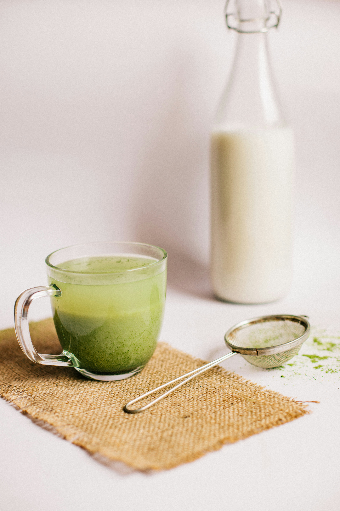

Low-carb Matcha Latte

Description
Plant-based milks contain carbs just like regular milk, so I'm using cream for this low carb version and some leciting for extra creaminess
Ingredients
- 2 tsp matcha
- 2 tsp sugar-free maple-flavoured syrup
- 40 g cream
- 10 g lecithin granules
- 15 g cold water
- 150 g hot water
Steps
- Whisk lecithin, maple syrup, matcha and cold water
- Add hot water and whisk some more
Back home